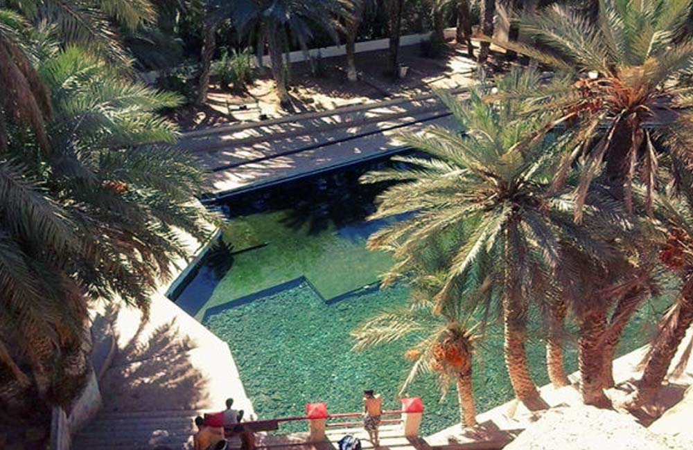
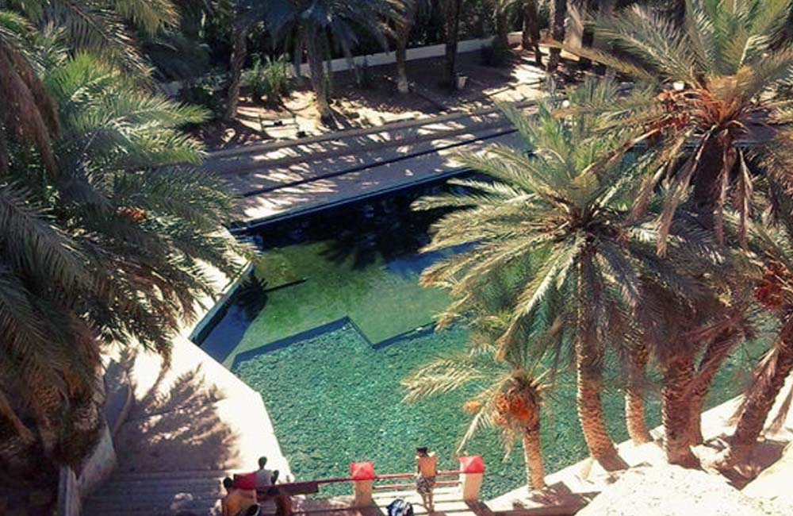

The provincial capital is located in Errachidia, a convenient pit stop for those travelling north along the N13 to Midelt and Meknes.
The ksour constitute one of the most important components of the built heritage of these countries, some dating back more than a thousand years.
The ksour of Morocco are found in the south and southeast of the country, in the regions of Souss-Massa , Drâa-Tafilalet , l'Oriental and Guelmim-Oued Noun 6 .
Here are the best hotels in Errachidia :
Kasbah Hotel Camping Jurassique
Address : Gorges du Ziz,, N13 , Errachidia, Errachidia, Maroc, 52000Phone number : +212666149227
Hôtel Vallée Ziz
Address : Albarid StreetPhone number : +212535573076
Hotel Kenzi Rissani
Address : Errachidia 52000Phone number : +212535572584
Hotel Oasis Palace
Address : National Road no 10Phone number : +212535570030
Kasbat Aferdou
Address : Zone Touristique Route de Goulmima., Errachidia 52000Phone number : +212535570110
Oasispalmares
Address : Boutalamine, 762, ErrachidiaPhone number : +212625958800
Musee des Sources de Lalla Mimouna
Explore two large gardens and the exquisite details of the medina's tallest
towers at Musee des Sources de Lalla Mimouna. Currently composed of gardens and a museum,
the complex dates back to the 16th century. Following destruction about a century later, it
was rebuilt in the mid-19th century as the home of Haha tribe leader qaid al-Hajj Abd-Allah
U-Bihi.
Tour the site to discover information about its Arab-Andalusian and Moroccan
landscaping and architecture. Afterwards, you can linger in the onsite bookshop, cafes, and
boutique. Put Musee des Sources de Lalla Mimouna into our Errachidia trip maker website to
see other points of interest to visit during your vacation in Errachidia.
Macro Fossiles Kasbah, Erfoud
Explore fossils embedded in rock and polished for display at Macro Fossiles
Kasbah, a workshop and gallery showcasing processed minerals found in the desert. This
family-run company makes exhibition pieces highlighting fossil imprints--evidence that this
area was once a seabed.
Pore over the various objects, including water fountains, chess
sets, plates and bowls, which contain original selenopeltis trilobites, starfish, and
bivalves. You'll observe the traditional way of polishing stones using sand and water, and
can take home a truly prehistoric souvenir. With our world travel planner, Erfoud
attractions like Macro Fossiles Kasbah can be center stage of your vacation plans, and you
can find out about other attractions like it, unlike it, near it, and miles away.
The Oasis Museum, Tinejdad
The Oasis Museum is located in Tinejdad. Before you head to Tinejdad, plan trip itinerary details with our user-friendly Tinejdad travel planning tool, to make sure you see all that Tinejdad has to offer, including The Oasis Museum.
The mausoleum of Moulay Ali Sharif, Rissani
The mausoleum of Moulay Ali Sharif is located in Rissani. With our international travel planner, Rissani attractions like The mausoleum of Moulay Ali Sharif can be center stage of your vacation plans, and you can find out about other attractions like it, unlike it, near it, and miles away.
Thundra Adventure, Errachidia
Thundra Adventure is located in Errachidia. Put Thundra Adventure at the forefront of your travel plans using our Errachidia driving holiday tool.
La Source Bleu de Meski, Errachidia
La Source Bleu de Meski is located in Errachidia. Add La Source Bleu de Meski to your Errachidia travel itinerary, and discover new vacation ideas by using our Errachidia trip maker site.
 
